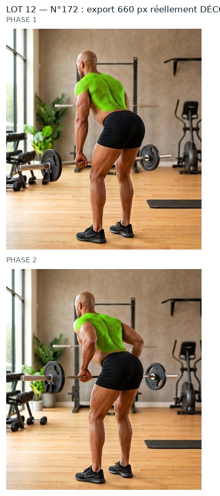
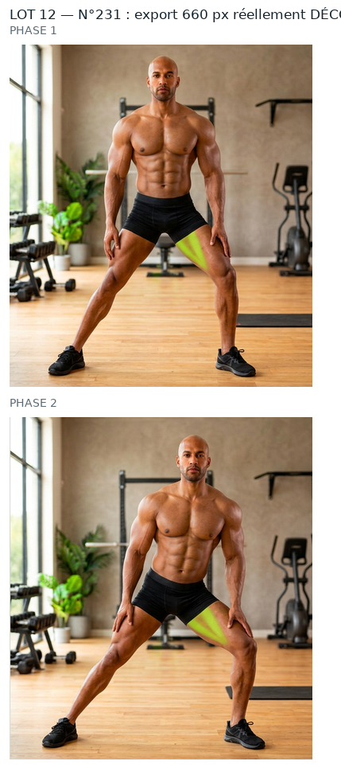
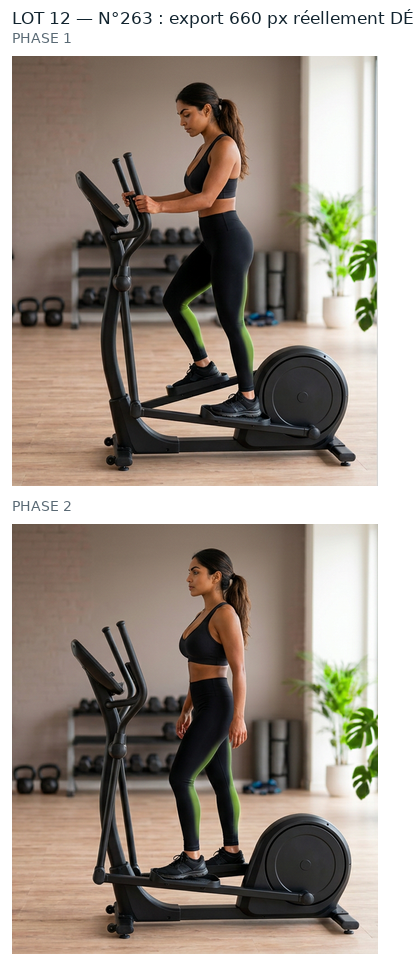
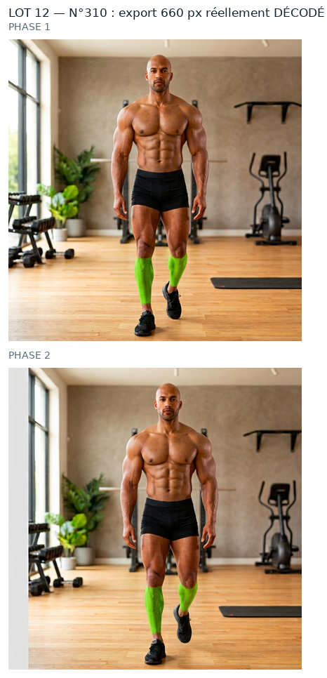

Mêmes règles que le n°44 et les lots précédents que tu as validés : source PNG native, aucun agrandissement, retouche à la résolution de la source, vert ramené dans la famille du n°260, puis WebP animé 660 px (+ GIF de secours). Rien n'est intégré : aucun GIF livré remplacé, APK intact, 0 image générée.
S 0,974 -> 0,929, teinte 76,8° -> 85,8°. Attention : contours 11,8/10,7 px, les plus larges du lot hors piscine — le degrade du buste penche adoucit la limite. A regarder de pres.
contour large : 11.35 px de transition sur la phase 1 (3 à 6 px sur les numéros les plus nets) — le bord du vert y est plus doux
contour large : 10.24 px de transition sur la phase 2 (3 à 6 px sur les numéros les plus nets) — le bord du vert y est plus doux
zone verte étendue (17548 px) : à vérifier qu'elle ne déborde pas sur le décor
teinte de la source à 77.1°, éloignée des 86,3° du n°260 — la couleur de départ est différente
Le mieux place du lot : teinte deja a 86,8° (reference 86,3°), S 0,79 -> 0,897 sans forcer. Nettete 42,9 dB. Aucun recalage de couleur a faire, le gain est de nettete pure.
Cas inedit : le vert source etait TROP sature (S 0,991, le plus extreme jamais mesure) — il est ramene a 0,929, donc plus proche des 0,914 de la reference 260. La teinte passe de 80° a 86°. Contours serres 4,7/5,2 px.
teinte de la source à 79.9°, éloignée des 86,3° du n°260 — la couleur de départ est différente
Ces planches montrent ce que contient réellement le WebP et le GIF de repli (fichiers rouverts image par image), pas le PNG de travail.

n°172 — WebP + GIF décodés

n°231 — WebP + GIF décodés

n°263 — WebP + GIF décodés

n°310 — WebP + GIF décodés
Ce qui reste écarté
n°1, 9, 10 : vert = feuillage du décor (décision du 01/10/2026).
n°218, 235, 239 : planche annoncée ≠ GIF livré (47 à 80/255) — chantier à part.
34 numéros « femme » sans source native (210, 224-259, 274-276, 289-330) : aucune source, donc hors de cette méthode.
Limites (inchangées)
Le GIF reste limité à 256 couleurs par image : c'est le WebP qui porte la qualité.
Au-delà de 660 px d'export on n'ajoute aucun détail, seulement du poids.
Les ROI sont dérivées de la tache verte mesurée dans le GIF livré, pas posées à l'œil (pas de vision dans cette session) : à confirmer visuellement.
Dis-moi, numéro par numéro : « 172 OK » · « 231 OK » · « 263 OK » · « 310 OK » — ou ce qui cloche (teinte, contour, zone mal placée…). Rien ne sera intégré et aucun GIF livré ne sera remplacé avant ton accord.
Contrôles chiffrés
ROI, seuils, percentiles, poids, PSNR et garantie « aucun pixel modifié hors zone » : evolution/media/refonte-photo/hd-2026-09-30/lot12/CONTROLES.json